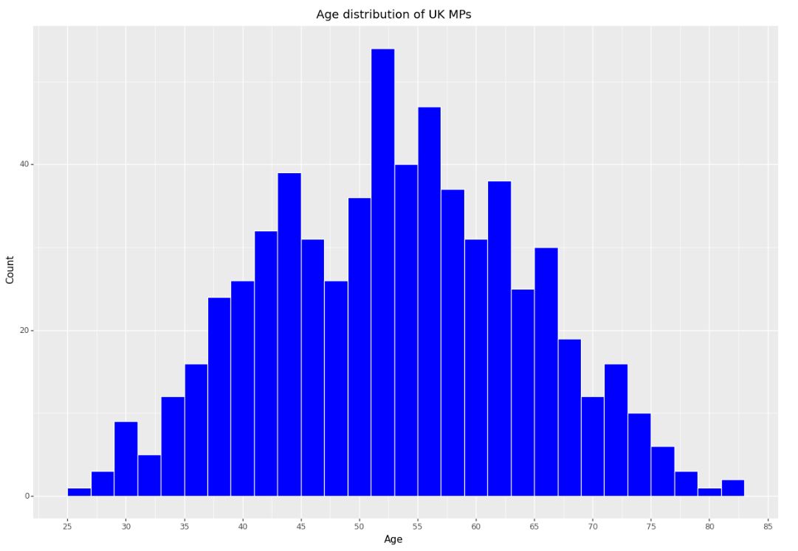
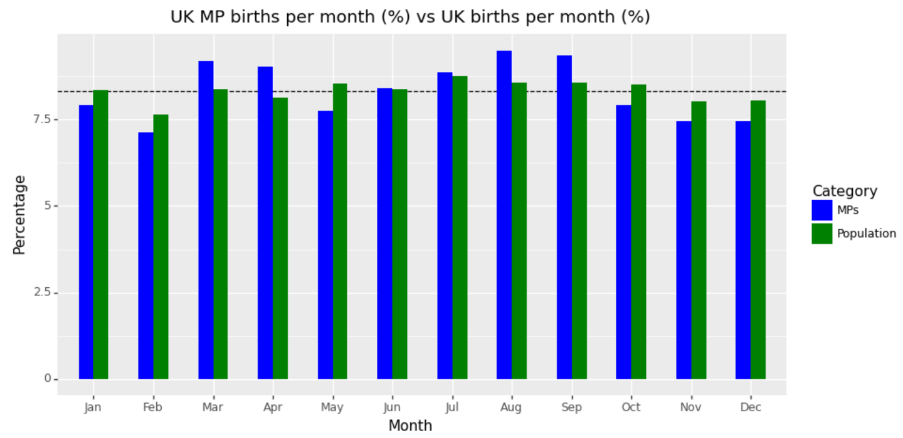
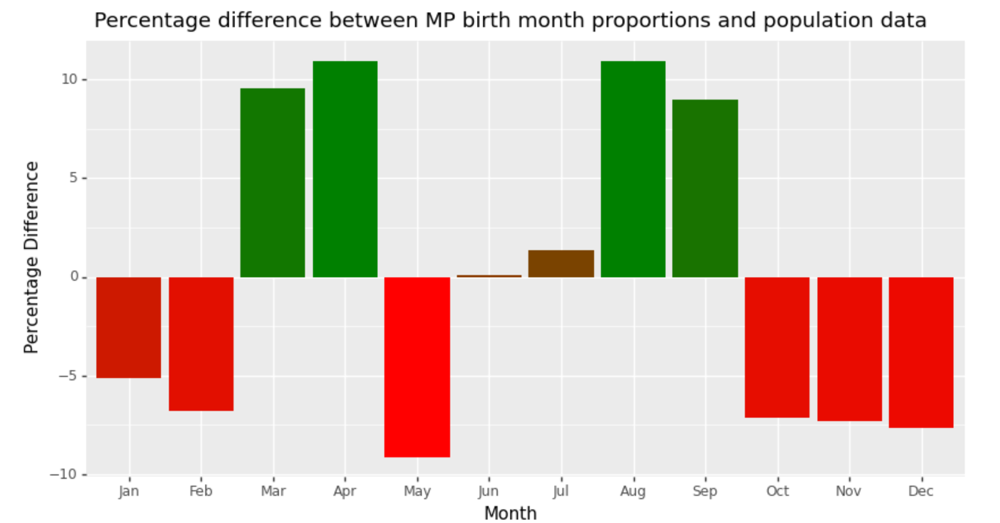
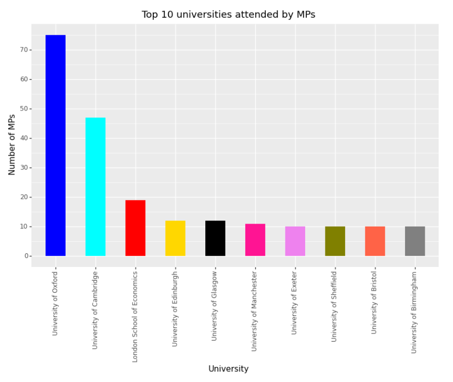

Code
import requests
from bs4 import BeautifulSoup
import pandas as pd
import numpy as np
import re
from plotnine import *
import seaborn as sns
sns.set_theme("talk", "whitegrid")Given the limitations of the EveryPolitician dataset, we now conduct a focused analysis of current UK MPs using a newly-constructed dataset.
This allows us to consider the effect of additional factors on political representation, such as university attended and age, that the EveryPolitican dataset does not include or allow for.
We use a mix of course methods to obtain data on current UK MPs from Wikipedia, harnessing their API as well as using web scraping skills to extract the relevant pieces of information from the respective pages of each MP.
Since the UK is split into four countries, and Wikipedia has four separate pages for these, we use the Wikipedia API to retrieve a list of the current MPs sitting in each constituency of England, Wales, Scotland, and Northern Ireland separately.
First we scraped the HTML for the page that lists the current sitting England MPs.
# I want to use the Wikipedia API to get the html for the page that lists current sitting England MPs
eng_page_key = 'List_of_MPs_for_constituencies_in_England_(2019–present)'
eng_page_endpoint = 'page/' + eng_page_key + '/html'
stem_url = 'https://en.wikipedia.org/w/rest.php/v1/'
universal_url = 'https://en.wikipedia.org/wiki/'
headers = {'User-Agent': 'Student Project'}
eng_url = stem_url + eng_page_endpoint
def get_html(url):
r = requests.get(url, headers=headers)
s = BeautifulSoup(r.text)
return s
# I want to get a list of all the wikitables on the page
def get_wikitables(s):
wikitables = s.find_all('table', class_='wikitable')
return wikitables
# I want to get only the 3rd, 5th, 7th, 9th, 11th, 13th, 15th, 17th and 19th tables in one list, as these contain the MPs
england_mp_wikitables = get_wikitables(get_html(eng_url))[2:20:2]
england_mp_wikitables
# I want to get the links from the mp tables and put them in a list
eng_names = [link.text for table in england_mp_wikitables for link in table.find_all('span', class_='fn')]
eng_names = [link.replace(" ", "_") for link in eng_names]
eng_links = [link.find('a')['href'] for table in england_mp_wikitables for link in table.find_all('span', class_='fn')]
england_mp_links = [link.replace("./", universal_url) for link in eng_links]
# england_mp_links[:15]
# I need to get rid of the 12 MPs who have resigned or died since the last election - they are only in the england page, and are italicised in the page
page_html = get_html(eng_url).find_all('i')
relevant_lines = page_html[1:13]
resigned_MP_links = [link.get('href') for i in relevant_lines for link in i.find_all('a')]
resigned_MP_links = [link.replace("./", universal_url) for link in resigned_MP_links]
resigned_MP_links = [link.replace(" ", "_") for link in resigned_MP_links]
len(resigned_MP_links)
# I want to get rid of the resigned MPs from the list of links
england_mp_links_final = [link for link in england_mp_links if link not in resigned_MP_links]
# len(england_mp_links_final)
# I encounter an issue here - there is one too few MP for England (532 instead of 533)532The number of MPs for constituencies in Wales
# I want to use the Wikipedia API to get the html for the page that lists current sitting Welsh MPs
wal_page_key = 'List_of_MPs_for_constituencies_in_Wales_(2019–present)'
wal_page_endpoint = 'page/' + wal_page_key + '/html'
stem_url = 'https://en.wikipedia.org/w/rest.php/v1/'
universal_url = 'https://en.wikipedia.org/wiki/'
headers = {'User-Agent': 'Student Project'}
wal_url = stem_url + wal_page_endpoint
wales_mp_wikitables = get_wikitables(get_html(wal_url))[1]
wales_mp_wikitables
wal_names = [link.text for link in wales_mp_wikitables.find_all('span', class_='fn')]
wal_names = [link.replace(" ", "_") for link in wal_names]
wal_links = [link.find('a')['href'] for link in wales_mp_wikitables.find_all('span', class_='fn')]
wales_mp_links = [link.replace("./", universal_url) for link in wal_links]
len(wales_mp_links)40The number of MPs for constituencies in Scotland
sco_page_key = 'List_of_MPs_for_constituencies_in_Scotland_(2019–present)'
sco_page_endpoint = 'page/' + sco_page_key + '/html'
stem_url = 'https://en.wikipedia.org/w/rest.php/v1/'
universal_url = 'https://en.wikipedia.org/wiki/'
headers = {'User-Agent': 'Student Project'}
sco_url = stem_url + sco_page_endpoint
scotland_mp_wikitables = get_wikitables(get_html(sco_url))[1]
scotland_mp_wikitables
# I want to get the links from the mp tables and put them in a list
sco_names = [link.text for link in scotland_mp_wikitables.find_all('span', class_='fn')]
sco_names = [link.replace(" ", "_") for link in sco_names]
sco_links = [link.find('a')['href'] for link in scotland_mp_wikitables.find_all('span', class_='fn')]
scotland_mp_links = [link.replace("./", universal_url) for link in sco_links]
len(scotland_mp_links)59The number of MPs for constituencies in Northern Ireland
ni_page_key = 'List_of_MPs_for_constituencies_in_Northern_Ireland_(2019–present)'
ni_page_endpoint = 'page/' + ni_page_key + '/html'
stem_url = 'https://en.wikipedia.org/w/rest.php/v1/'
universal_url = 'https://en.wikipedia.org/wiki/'
headers = {'User-Agent': 'Student Project'}
ni_url = stem_url + ni_page_endpoint
northern_ireland_mp_wikitables = get_wikitables(get_html(ni_url))[2]
northern_ireland_mp_wikitables
# I want to get the links from the mp tables and put them in a list
ni_names = [link.text for link in northern_ireland_mp_wikitables.find_all('span', class_='fn')]
ni_names = [link.replace(" ", "_") for link in ni_names]
ni_links = [link.find('a')['href'] for link in northern_ireland_mp_wikitables.find_all('span', class_='fn')]
northern_ireland_mp_links = [link.replace("./", universal_url) for link in ni_links]
len(northern_ireland_mp_links)
18Then we made the final list of all MPs, but realise that something is wrong here! There are supposed to be 650 sitting MPs, yet our list produces 649 - we try and find out which oone is missing.
649We investigate the missing MP by using TheyWorkForYou’s database of sitting MPs
pages_html = get_html('https://www.theyworkforyou.com/mps/')
mp_names_twfy = pages_html.find_all('h2', class_='people-list__person__name')
mp_names_twfy = [link.text for link in mp_names_twfy]
mp_names_twfy = [link.replace(" ", "_") for link in mp_names_twfy]
len(mp_names_twfy)
# Now using regex I want to see which name is missing from my list of 649 UK MPs
missing_by_regex = [name for name in mp_names_twfy if re.search(name, str(uk_mp_links)) == None]
# missing_by_regex
# Given the nature of some names (eg Jon Ashworth vs Jonathan Ashworth) I need to find the missing MP by hand from this list of 23 anomalies identified by regex search
# I have found that the missing MP is Kim Leadbeater, who was elected in July 2021 - this is a mistake on Wikipedia's part, for not including her in the longlist of MPs at time of writing (she replaced Tracy Babin post-resignation, but her name was not added to the England list)
# I will add her to the list of links manually, but add a check in case she is added to the Wikipedia list in the futureBy using the ‘regex’ package we compare the lists to see which name is missing from the list of 649 MPs
Given the nature of some names (eg. Jon Ashworth vs Jonathan Ashworth) we needed to find the missing MP manually from the list of 23 anomalies identified by regex search
['Jon_Ashworth',
'Steven_Baker',
'Therese_Coffey',
'Edward_Davey',
'Jeffrey_M._Donaldson',
'Nicholas_Fletcher',
'Nusrat_Ghani',
'Preet_Kaur_Gill',
'Matthew_Hancock',
'Christopher_Hazzard',
'Dr_Caroline_Johnson',
'Diana_R._Johnson',
'Kate_Kniveton',
'Kim_Leadbeater',
'John_Martin_McDonnell',
'Navendu_Mishra',
'Ian_Paisley_Jnr',
'Christopher_Pincher',
'Liz_Saville-Roberts',
'Naseem_Shah',
'Andrew_Slaughter',
'Elizabeth_Truss',
'Thomas_Tugendhat']The missing MP is Kim Leadbeater, who was elected in July 2021 - this is a mistake on Wikipedia’s part, for not including her in the longlist of MPs at time of writing (she replaced Tracy Babin post-resignation, but her name was not added to the England list)
We added her to the list to complete our list of 650 MPs
650We group MPs by the following:
• MP birth date
• MP alma mater (university)
We then created a function that takes a link to a UK MP’s Wikipedia page and returns a dictionary of their name, birth date, party, and university.
After extracting the information we wanted for our UK focused analysis, we constructed the final data frame which includes all MPs birth dates, party, alma mater and name.
Then we test the function on just a singular MP# I want to create a function that takes a link to a UK MP's Wikipedia page and returns a dictionary of their name, birth date, party and university
def get_mp_info(link):
mp_info = {}
mp_page_html = get_html(link)
mp_page_infobox = mp_page_html.find('table', class_='infobox')
try:
mp_info['name'] = mp_page_html.find('div', class_='fn').text
except:
mp_info['name'] = None
if mp_info['name'] == 'Nigel Evans':
mp_info['birth date'] = '1957-11-10'
else:
try:
mp_info['birth date'] = mp_page_html.find('span', class_ = 'bday').text
except:
mp_info['birth date'] = None
all_mp_page_links = mp_page_infobox.find_all('a', title = True)
try:
mp_info['party'] = [link.text for link in all_mp_page_links if re.search('Party|Liberal Democrats|Co-operative|Sinn|Independent|Conservative|Labour|Plaid', str(link)) != None][0]
except:
mp_info['party'] = None
try:
mp_info['university'] = [link.text for link in all_mp_page_links if re.search('University|London School of Economics|Imperial|Guildhall|Malachy|, Oxford|, Cambridge|Oxford$|Cambridge$', str(link)) != None][0]
except:
mp_info['university'] = None
return pd.DataFrame(mp_info, index = [0])
# I want to test the function on a random MP
get_mp_info('https://en.wikipedia.org/wiki/Shailesh_Vara')
uk_mps_df= pd.concat([get_mp_info(link) for link in uk_mp_links_final])
# uk_mps_df = pd.DataFrame([get_mp_info(link) for link in uk_mp_links_final])
# NB takes <5 mins to run
uk_mps_df['birth date'] = pd.to_datetime(uk_mps_df['birth date'])
uk_mps_df['age'] = round((pd.to_datetime('today') - uk_mps_df['birth date'])/np.timedelta64(1,'Y'), 1)
uk_mps_df.to_csv('data/uk_mps_dataframe.csv', index=False)
uk_mps_df
Great! It works
Now we get a dataframe of all the sitting MPs birthday date, party, alma mater and name:
• We have some missing values for birth date (problems with the Wikipedia page not containing this information) therefore births analysis will be limited to MPs for whom birth data is available.
• University analysis will be limited to university-attendees where data is available: 570 out of 650
• We use UN births data for UK comparison
# UN Births Data for UK for comparison
UN_births_data=pd.read_csv('data/Births Data UN.csv')
UN_births_data.drop(['Area', 'Record Type', 'Value Footnotes', 'Source Year'],axis=1,inplace=True)
UN_births_data=UN_births_data.query("Month in ['January','February','March','April','May','June','July','August','September','October','November','December']")
# I want a subset of UN_births_data for the UK only
UK_UN_births_data = UN_births_data.loc[UN_births_data['Country or Area'] == 'United Kingdom of Great Britain and Northern Ireland']
# We have data for the period 1982 to 2020, which is acceptable
UK_UN_births_data = UK_UN_births_data.groupby('Month').sum()[['Value']].reindex(['January','February','March','April','May','June','July','August','September','October','November','December'])
UK_UN_births_data.index=['Jan','Feb','Mar','Apr','May','Jun','Jul','Aug','Sep','Oct','Nov','Dec']
UK_UN_births_data['uk_population_births_percentage']=(UK_UN_births_data['Value']/UK_UN_births_data['Value'].sum()*100).round(2)
UK_UN_births_data.rename(columns={'Value':'uk_un_births_count'},inplace=True)
UK_UN_births_data
monthly_mp_data=uk_mps_df.groupby(uk_mps_df['birth date'].dt.month).count()[['name']]
monthly_mp_data.index=['Jan','Feb','Mar','Apr','May','Jun','Jul','Aug','Sep','Oct','Nov','Dec']
monthly_mp_data['uk_mps_births_percentage']=(monthly_mp_data['name']/monthly_mp_data['name'].sum()*100).round(2)
monthly_mp_data.rename(columns={'name':'uk_mp_count'},inplace=True)
monthly_mp_data
# Preparing data for visualisation
merged_uk_df = pd.merge(monthly_mp_data,UK_UN_births_data,how='left',left_index=True,right_index=True)
merged_uk_df['percentage_difference'] = (merged_uk_df['uk_mps_births_percentage'] - merged_uk_df['uk_population_births_percentage'])/merged_uk_df['uk_population_births_percentage']*100
merged_uk_df.index=pd.Categorical(merged_uk_df.index, categories=['Jan','Feb','Mar','Apr','May','Jun','Jul','Aug','Sep','Oct','Nov','Dec'], ordered=True)
# I want to plot the percentages of the number of UK MPs born in each month and the percentage of the UK population born in each month
# Plotnine requires a dataframe in long format for double bar plot
# # Older implementation using matplotlib
# merged_uk_df['month'] = merged_uk_df.index
# merged_uk_df['month'] = pd.Categorical(merged_uk_df['month'], categories=['Jan','Feb','Mar','Apr','May','Jun','Jul','Aug','Sep','Oct','Nov','Dec'], ordered=True)
# merged_uk_df.plot(x='month', y=['uk_mps_births_percentage','uk_population_births_percentage'], legend=True, kind='bar', title='UK MP births per month (%) vs UK births per month (%)', figsize=(15,10), color=['blue', 'green'])
# plt.show()
# Plot the ages of MPs as a histogram
ggplot(uk_mps_df,aes(x='age')) \
+ geom_histogram(binwidth=2, fill='blue', color='white') \
+ labs(title='Figure 1: Age distribution of UK MPs',x='Age',y='Count') \
+ theme(figure_size=(15,10)) \
+ scale_x_continuous(breaks=range(0,100,5)) 
The average age of a UK MP is 53.3 years old.As shown in the plot, age follows an approximately normal distribution with a mean centred around 53.3
# Percentage difference plot
ggplot(merged_uk_df,aes(x='merged_uk_df.index',y='percentage_difference', fill='percentage_difference')) \
+ geom_bar(stat='identity') \
+ labs(title='Figure 2: Percentage difference between MP birth month proportions and population data',x='Month',y='Percentage Difference') \
+ scale_fill_gradient(low='red',high='green', breaks=[0]) \
+ theme(figure_size=(10,5), legend_position='none')
plot_df=pd.concat([merged_uk_df[['uk_mps_births_percentage']].rename(columns={'uk_mps_births_percentage':'percentage'})\
,merged_uk_df[['uk_population_births_percentage']].rename(columns={'uk_population_births_percentage':'percentage'})],axis=0).reset_index()
plot_df['Category']=['MPs' if i<12 else 'Population' for i in range(24)]
ggplot(plot_df,aes(x='index',y='percentage',fill='Category'))\
+ geom_hline(yintercept=8.33, linetype='dashed', color='black') \
+ geom_bar(stat='identity', position='dodge', width=0.5) \
+ labs(x='Month', y='Percentage', title='Figure 3: UK MP births per month (%) vs UK births per month (%)') \
+ theme(figure_size=(10, 5))\
+ scale_fill_manual(values=['blue','green']) 
We observe that the trends we saw in politicians being born in the first six months, don't seem to hold here.
Although people born in March and April (i.e. initial months in the year) are relatively higher than the rest, so are results for being born in September and August making it difficult to identify a clear generalizable trend. However considering that the schooling system in Britain starts from September the earlier explanation of a relative age effect might be relevant. Specifically, the advantage of being born earlier in terms of maturity and development compared to peers in a year group might improve the likelihood of future opportunities such as pursuing a career in politics, potentially contributing to the high percentage of politicians, 9.51 and 9.35, are born in August and September respectively. However, we also observe similar results for March and April, 9.19 and 9.03, so perhaps there are other drivers at play that we have not considered.
We rank the universities by the count of MPs who attended and what percentage of all MPs attended the university:
universities_list = pd.DataFrame(uk_mps_df['university'])
universities_list.dropna(inplace=True)
# Currently LSE is most common, but the colleges in cambridge and oxford should not be counted as separate universities
# I want to create a dataframe of only values from the universities_list that satisfy the regex search for 'Oxford$'
oxford = universities_list[universities_list['university'].str.contains('Oxford$')]
oxford
# I want to create a dataframe of only values from the universities_list that satisfy the regex search for 'Cambridge|St. John'
cambridge = universities_list[universities_list['university'].str.contains('Cambridge|St. John')]
cambridge
# I want to correct for other variants of names
universities_list.loc[universities_list['university'].str.contains('London School of Economics'), 'university'] = 'London School of Economics'
# I want to replace all values in the universities_list dataframe that are also present in the oxford dataframe with 'University of Oxford'
universities_list.loc[universities_list['university'].isin(oxford['university']), 'university'] = 'University of Oxford'
# I want to replace all values in the universities_list dataframe that are also present in the cambridge dataframe with 'University of Cambridge'
universities_list.loc[universities_list['university'].isin(cambridge['university']), 'university'] = 'University of Cambridge'
universities_ranked = pd.DataFrame(universities_list.value_counts()).reset_index()
universities_ranked.rename(columns={0:'count', 'university':'university'},inplace=True)
universities_ranked['percentage'] = (universities_ranked['count']/universities_ranked['count'].sum()*100).round(2)
universities_ranked.rename(columns={'count':'number of MPs'},inplace=True)
universities_ranked
# Now Oxford and Cambridge are correctly represented | university | number of MPs | percentage | |
|---|---|---|---|
| 0 | University of Oxford | 76 | 14.99 |
| 1 | University of Cambridge | 46 | 9.07 |
| 2 | London School of Economics | 19 | 3.75 |
| 3 | University of Edinburgh | 12 | 2.37 |
| 4 | University of Glasgow | 12 | 2.37 |
| ... | ... | ... | ... |
| 118 | Newcastle Polytechnic | 1 | 0.20 |
| 119 | Moray House College of Education | 1 | 0.20 |
| 120 | London South Bank University | 1 | 0.20 |
| 121 | London Metropolitan University | 1 | 0.20 |
| 122 | Wrexham Glyndŵr University | 1 | 0.20 |
123 rows × 3 columns
# Top 10 universities attended by MPs, plotted with multiple colours
universities_ranked['university'] = pd.Categorical(universities_ranked['university'], categories=universities_ranked['university'], ordered=True)
# Create the plot using plotnine
plot = (
ggplot(universities_ranked.head(10), aes(x='university', y='number of MPs', fill='university')) +
geom_bar(stat='identity', width=0.5) +
labs(title='Figure 4: Top 10 universities attended by MPs', x='University', y='Number of MPs') +
scale_fill_manual(values=['blue', 'cyan', 'red', 'gold', 'black', 'deeppink', 'violet', 'olive', 'tomato', 'grey']) +
theme(figure_size=(10, 6), legend_position='none', axis_text_x=element_text(rotation=90)) +
scale_y_continuous(breaks=range(0, 100, 10))
)
plot
There is a clear indication of the most frequently attended university of UK politicians - University of Oxford.
76 UK MPs attended Oxford. Other universities are not even close to competing with Oxford, not even LSE!
This might be explained by the extensive political networks, influential alumni, and enhanced perceived competence gained from attending prestigious universities like Oxford, Cambridge, or LSE which positively influence the likelihood of becoming a politician.
A particularly surprising finding in this plot though is that many top London universities are absent from the top (e.g. King's College, UCL) while many less prestigious regional universities (e.g. Exeter, Birmingham) find their way into the top 10. Some possible explanations could be the geographical nature of the UK SMDP electoral system, the higher prevalence of international students in London universities, and the fact that the ruling Conservative party is more popular in other regions than in London.
# Plotnine does not support coord_polar of ggplot yet, so we will have to use matplotlib
# In the worst case we can use a stacked bar chart or some other alternative
import matplotlib.pyplot as plt
universities_ranked.plot(x="university", y="percentage", kind='pie', title='Figure 5: Oxbridge Domination', figsize=(15,10), colors=['blue','cyan','red','orange','purple','yellow','pink','brown','grey','black','green','lightblue','lightgreen','lightgrey','lightpink'], labels=None, ylabel=None, xlabel=None, startangle=90, counterclock=True, legend=False)
plt.show()
oxford_percentage = universities_ranked.loc[universities_ranked['university'] == 'University of Oxford', 'percentage'].values[0]
print('Oxford percentage: ' + str(oxford_percentage) + '%')
cambridge_percentage = universities_ranked.loc[universities_ranked['university'] == 'University of Cambridge', 'percentage'].values[0]
print('Cambridge percentage: ' + str(cambridge_percentage) + '%')
oxbridge_percentage = (universities_list.value_counts()[0:2].sum()/universities_list.value_counts().sum()*100).round(1)
print('Oxbridge percentage: ' + str(oxbridge_percentage) + '%')
lse_percentage = universities_ranked.loc[universities_ranked['university'] == 'London School of Economics', 'percentage'].values[0]
print('LSE percentage: ' + str(lse_percentage) + '%')
Oxford percentage: 14.99%
Cambridge percentage: 9.07%
Oxbridge percentage: 24.1%
LSE percentage: 3.75%Oxbridge clearly dominates.
Nevertheless, we have shown that a significant propotion of politicians have attended elite universities, it is now the job of the economists and political scientists to determine how significant of a problem this is for the governing of the state!